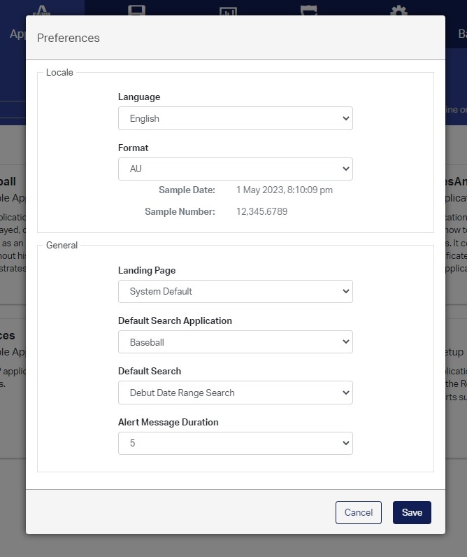
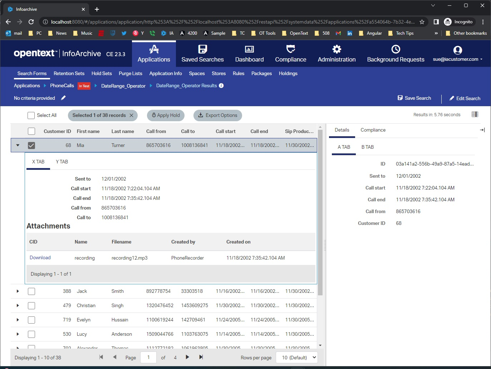
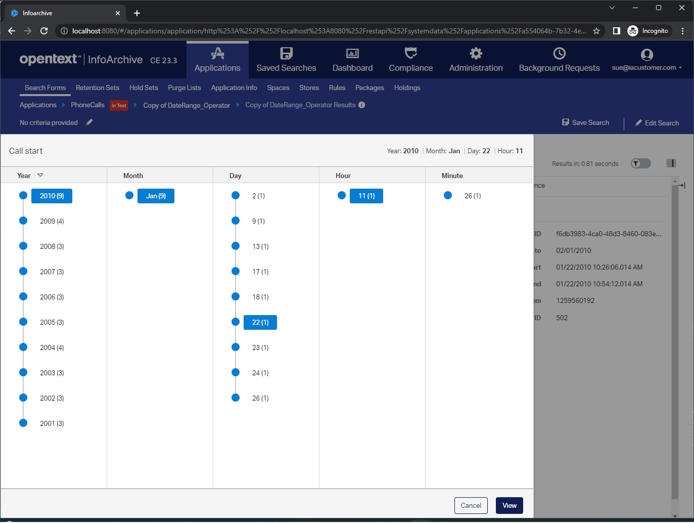
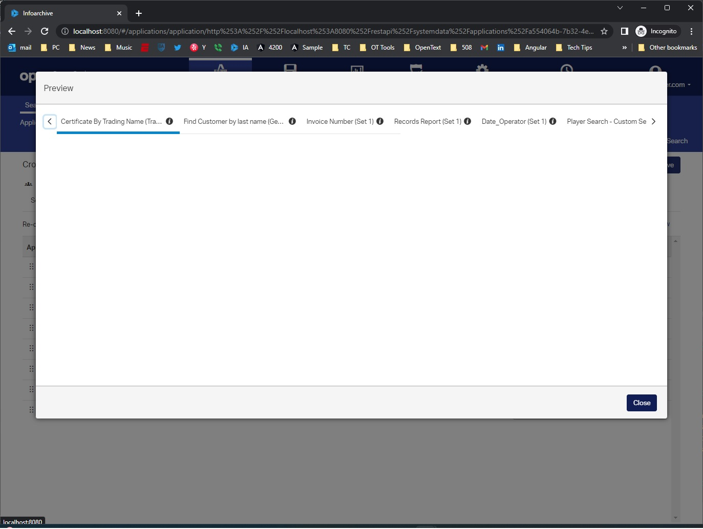

<div class="display:flex; justify-content:center; align-items:center;">
  <p-tabView class="sub-tabs">
    <p-tabPanel header="User Preferences">
      <h6 class="d-flex">
        
        <ol>
          <li>Implemented locale specific formats for displaying numbers and dates</li>
          <li>Implemented landing page user default</li>
          <li>Implemented default search and search application per user default</li>
        </ol>
      </h6>
    </p-tabPanel>
    <p-tabPanel header="Tables">
      <h6 class="d-flex">
        
        <ol>
          <li>PrimeNg Tables for displaying tabular information</li>
          <li>Implemented re-sizable left and right detail panel</li>
          <li>Implemented expandable child detail table</li>
          <li>Actions on table rows have different logic, depending on record</li>
          <li>Implemented Pagination Controls</li>
        </ol>
      </h6>
    </p-tabPanel>
    <p-tabPanel header="Timeline View Quick Filter">
      <h6 class="d-flex">
        
        <ol>
          <li>Worked on HTML and Css of Timeline view</li>
          <li>Going from left to right, quickly search for available records</li>
          <li>Selected column items always scrolled into view</li>
        </ol>
      </h6>
    </p-tabPanel>
    <p-tabPanel header="Scroll Tabs">
      <h6 class="d-flex">
        
        <ol>
          <li>Created custom scrolling tabs for search component</li>
          <li>Basic left/right scroll operation when scroll arrows are clicked</li>
          <li>Created this feature when no component libraries were readily available</li>
        </ol>
      </h6>
    </p-tabPanel>
  </p-tabView>
</div>
